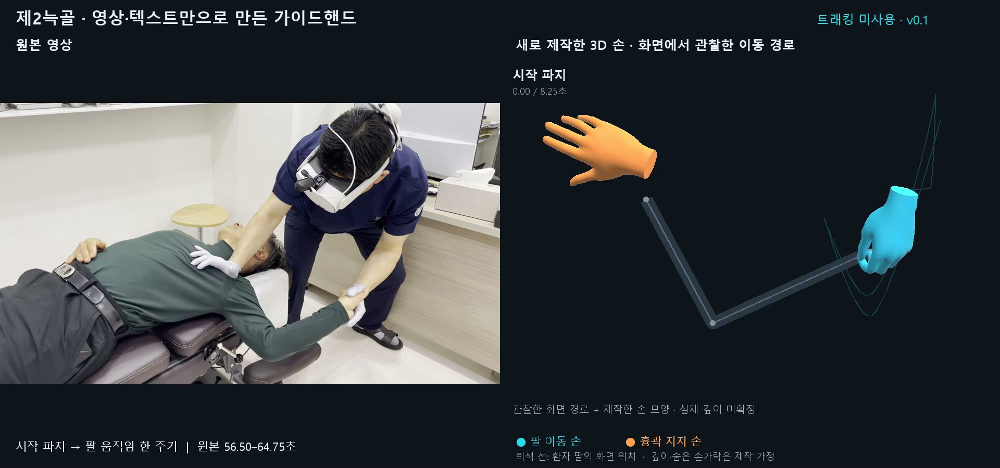
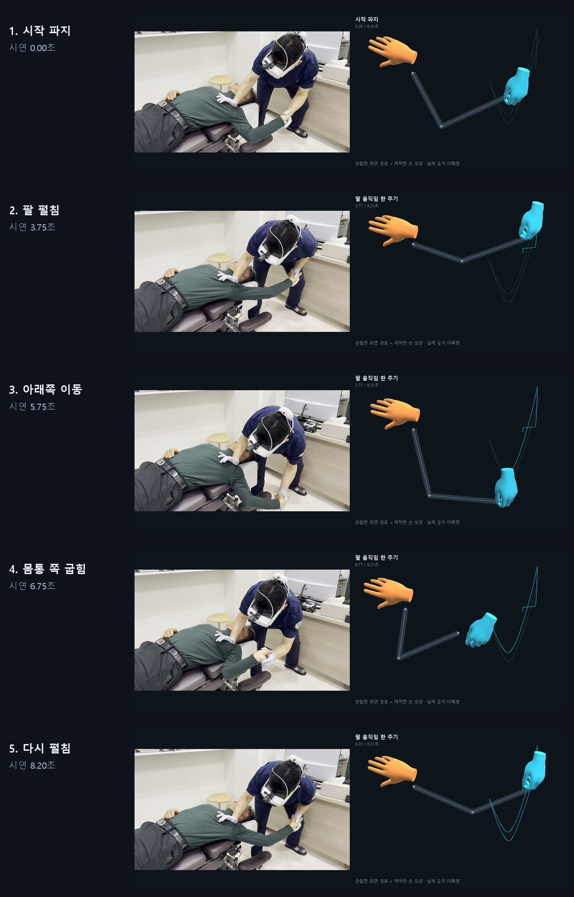

제2늑골 시작 파지와 팔 한 주기
왼쪽 원본 영상과 오른쪽 가이드핸드를 함께 보며 시작 파지와 움직임을 비교하세요.
영상을 읽지 못했습니다. comparison.mp4와 이 HTML을 같은 폴더에 두고 다시 열어 주세요.
시작 파지 · 원본 56.50초
청록: 시술자 왼손 · 팔 이동
주황: 시술자 오른손 · 흉곽 지지
회색 선: 환자 팔의 화면 기준선(2D)
트래킹 데이터 없이 영상에 보이는 손 위치와 텍스트 설명을 바탕으로 재구성했습니다. 한 시점의 화면을 직접 관찰한 2.5D 초안입니다. 깊이는 같은 평면(z=0)에 두었고, 가려진 손가락·손의 비틀림·절대 길이는 제작 가정입니다.




무엇을 보고 만들었는지
사용한 자료
제2늑골 원본 3인칭 영상 56.50~64.75초, 기존 시나리오의 텍스트 안내와 내부 사양 문구, Meta 손 모델의 기본 형태를 사용했습니다. 화면 좌표를 직접 관찰하고 손 모델의 기본 자세에서 손가락 굽힘과 손바닥 방향을 재구성했습니다. 자동 자세 추정기는 실행하지 않았습니다.
초안의 범위
26개 관절을 가진 3D 손 메시를 사용하지만, 이번 궤적은 영상의 화면 경로를 중심으로 만든 2.5D 재구성입니다. 회색 팔 선은 수동 관찰한 환자의 어깨·팔꿈치·손목 화면 좌표를 연결한 2D 기준선입니다. 환자 실측 정렬과 임상적 정확성은 아직 검증하지 않았습니다. 기존 시나리오와 통과 조건은 그대로 보존합니다.
이번 재구성에는 트래킹 CSV와 이전 시연의 포즈·궤적을 입력하지 않았습니다.